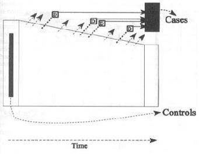
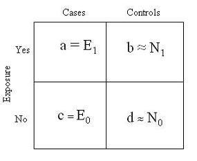
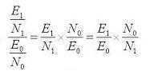

| Design | Sampling | Measure of Association |
|---|---|---|
| Case-cohort | Entire cohort at baseline | risk ratio |
| Incidence-density | Non-cases at time of diagnosis | rate ratio |
| Prevalent Case Control | Non-cases at single point in time | odds ratio |
is sampled randomly from baseline.
The case-cohort design is distinguished by taking a random sample of the study cohort at baseline.

